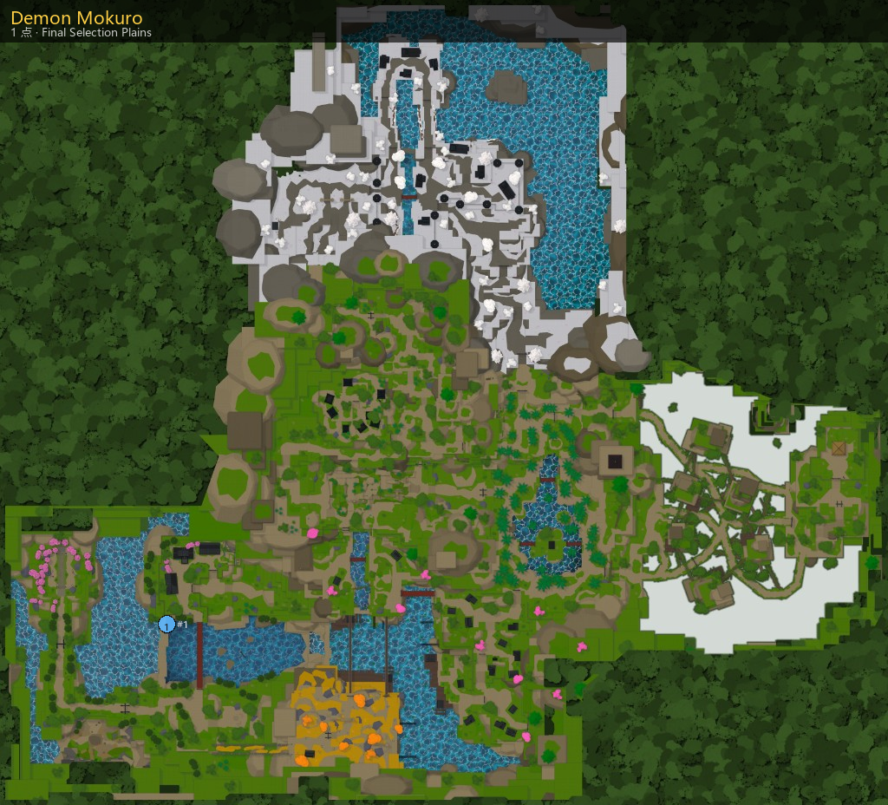

主页 / NPC / Demon Mokuro
Demon Mokuro
Demon Mokuro
任务
- 区域：Final Selection Plains (Final Selection Plains)
- 作用：任务
地点

坐标一览（1）
功能与用处
可接任务
对话摘录
And they all drill the same palm strike. Take it square and it puts you flat on the ground.
If you go down there, they won't wait for you to swing first.
Watch for the palm. The rest of what they do varies, but that strike is on every one of them.
One rung up from the bottom, and the first the Corps trusts out on its own.
Each one has a technique of their own, so don't assume the second fight will go like the first.
There's a Corps watch camped at the mouth of this cave. rank.
Past the palm, they're not all alike.
They camp a little deeper in every week. Nobody's given them a reason to stop.
Kill six of them. It won't end the watch, but it'll push it back out of the cave for a while.
› Ill break their watch(Lv 75)
› Close